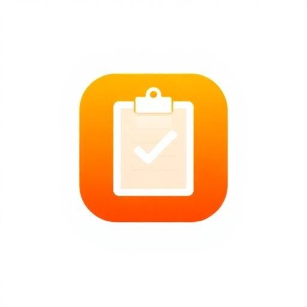

Sem conexão com o servidor
Não foi possível abrir o Conferência Rápida. Verifique sua internet e tente novamente.
Depois do primeiro acesso, as telas já visitadas e os dados baixados ficam disponíveis offline.

Não foi possível abrir o Conferência Rápida. Verifique sua internet e tente novamente.
Depois do primeiro acesso, as telas já visitadas e os dados baixados ficam disponíveis offline.